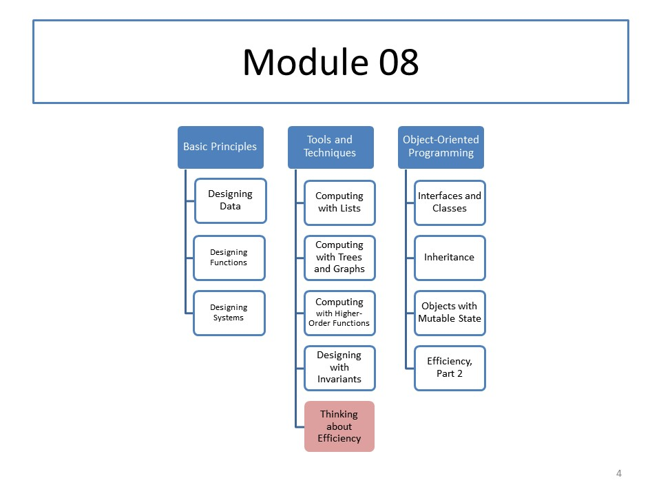

CS 5010: Module 08
Module Overview
In some problems, we will need to recur on quantities that are not pieces of the input structure. We call this general recursion. In this module, you will see examples of problems that can be solved using general recursion. You will also see how invariants can be used as a tool to express deep knowledge about how and why our programs work, and as a tool to guide the development of our programs.
This module also introduces asymptotic notation, which is useful for reasoning about the efficiency of programs.
Efficiency is too large a subject to be covered in a single module. Most of you will be required to take an entire core course (Algorithms) on the subject. In this course, we will introduce only the basic principles of writing efficient programs.
Course Map
Readings
Read Part V from our textbook. We are doing things in a different order than the textbook. We are also doing this topic rather differently, so use the textbook as background rather than as a normative reference.
Resources
Lessons
- Lesson 8.1: General Recursion
- Guided Practice 8.1
- Guided Practice 8.2
- Lesson 8.2 Case Study: Binary Search
- Guided Practice 8.3
- Lesson 8.3: Asymptotic Notation
- Lesson 8.4: A Less General Definition
- Lesson 8.5: Three Rules of Optimization
- Lesson 8.6: Case Studies: Compute Less
Problem Set
Problem Set 08 is due on Monday, 6 November 2017 at 6pm local time.